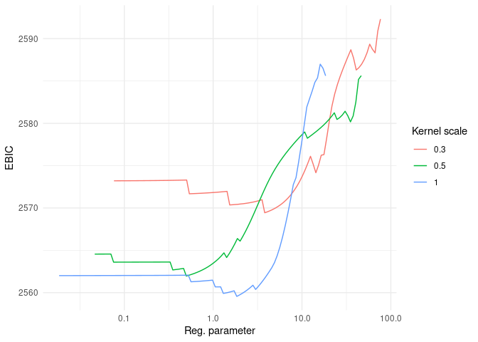

Last updated: Oct-28-2023
Installation
You can install the development version of LSVCMM from GitHub with:
# install.packages("devtools")
devtools::install_github("fontaine618/LSVCMM")Reference
For details on the LSVCMM method, refer to the Draft manuscript.
Example
This is a basic example which shows you how to solve a common problem:
library(LSVCMM)
instance = generate_synthetic_data()
fit = lsvcmm(
data=instance$data,
response="response",
subject="subject_id",
time="time",
vc_covariates="group",
kernel=list(scale=c(0.1, 0.2, 0.3)),
penalty=list(adaptive=0.5, penalize_intercept=T)
)
library(ggplot2)
ggplot() +
geom_line(
data=fit$results,
mapping=aes(x=penalty.lambda, y=ebich, color=as.factor(kernel.scale), group=kernel.scale)
) + scale_x_log10() +
theme_minimal() + labs(color="Kernel scale", x="Reg. parameter", y="EBIC")
i = which.min(fit$results$ebich)
t(fit$vc_path[,,i])
#> [,1] [,2]
#> [1,] 0.00000000 -0.1905021
#> [2,] 0.00000000 0.0000000
#> [3,] 0.00000000 0.0000000
#> [4,] -0.16977513 0.0000000
#> [5,] 0.00000000 0.0000000
#> [6,] -0.04898868 0.1558412
#> [7,] -0.48785789 1.2715141
#> [8,] -0.31260794 1.2169534
#> [9,] 0.00000000 0.7558545
#> [10,] -0.22549099 1.0335752
#> [11,] 0.00000000 0.9595684
instance$true_values
#> time b0 b1
#> 1 0.0 0 0.0000000
#> 2 0.1 0 0.0000000
#> 3 0.2 0 0.0000000
#> 4 0.3 0 0.0000000
#> 5 0.4 0 0.0000000
#> 6 0.5 0 0.1192029
#> 7 0.6 0 0.5000000
#> 8 0.7 0 0.8807971
#> 9 0.8 0 0.9820138
#> 10 0.9 0 0.9975274
#> 11 1.0 0 0.9996646
fit$results[i, ]
#> llk rss family.dispersion family.name
#> 290 -1219.911 956.1185 1.276527 gaussian
#> penalty.name penalty.alpha penalty.lambda penalty.adaptive
#> 290 adaptive_sparse_group_lasso 1 0.0005697523 0.5
#> penalty.penalize_intercept link_function.name working_covariance.estimate
#> 290 TRUE identity FALSE
#> working_covariance.ratio working_covariance.name kernel.name kernel.scale
#> 290 0.3703248 compound_symmetry gaussian 0.3
#> control.max_iter control.max_rounds control.rel_tol control.verbose
#> 290 1000 50 1e-06 1
#> control.update_method control.backtracking_fraction
#> 290 PGD 0.9
#> control.two_step_estimation control.stepsize_factor penalty df
#> 290 TRUE 1 2.869372e-06 12
#> df_kernel df_logn df_logn_kernel df_max aic aich bic
#> 290 2.051598 78.72887 13.46 22 2463.822 2443.925 2518.551
#> bich ebic ebich
#> 290 2453.282 2555.643 2459.623